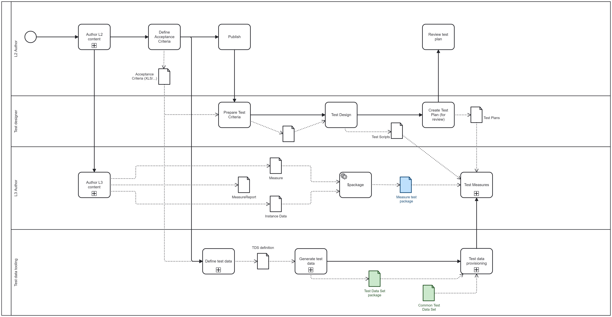

DRAFT SMART Guidelines L3 SOP
0.2.1 - CI Build

DRAFT SMART Guidelines L3 SOP
0.2.1 - CI Build

DRAFT SMART Guidelines L3 SOP, published by WHO. This guide is not an authorized publication; it is the continuous build for version 0.2.1 built by the FHIR (HL7® FHIR® Standard) CI Build. This version is based on the current content of https://github.com/WorldHealthOrganization/smart-ig-starter-kit and changes regularly. See the Directory of published versions
SMART Guidelines are testable - they include the content for allowing the specification to be tested, and the systems implementing the specification to be also tested. For this, the SMART Guidelines specifications include test content, and the SMART Guidelines tooling includes testing artifacts and reference working tool sets that support testing.
Testing SMART Guidelines can be done in 3 types of occasions:
Testing specifications - the L3 author can validate the specification with a known-working tool set. The content authored in the L3 (Measures, Libraries, StructureMaps) is checked with the examples provided to check that the extraction or library processing does produce the expected results. In this case, the specification is under test, and the tool set is a testing fixture. This testing can be done after authoring, or continuously in a BDD (Business Driven Development) or TDD (Test-Driven development) approach.
Testing implementations - At any time during the implementation, preferably frequently during the implementation, L4 implementers can test if their implementation produces the expected results. In this case, the implementation is under test, and the specification is a testing fixture. This testing can be also done after authoring, or continuously in a BDD or TDD approach.
Testing events - There may be community testing events, like Connectathons, where several systems are tested in combination. In this case, the implementations are under test, and the specification is a testing fixture, but is also subject to feedback.
To enable these different types of testing, the SMART Guidelines SHALL contain testing artifacts that assert the expected outcomes of a working system:
Test authoring includes 2 types of activities
Happy path scenario testing This is the first testing expected to be present - all the possible outcomes of the decision table should be tested - which doesn’t mean that all possible combinations have to be present, only the combination of inputs necessary to show each possible combination of the outcomes.
Negative testing This testing includes additional scenarios for testing invalid or unexpected conditions. This testing helps identify possible real-world scenarios that may happen and were not initially foreseen but which could cause harm if not accommodated.
Performance testing This testing would include larger volumes of data, to check how the system performs for example under load or in other real-world scenarios
Test Data can be provided in several ways:
Example data - as described before, each SMART Guideline shall contain example resource instances, which should be used to describe the information path. These resource instances can be used in testing.
Generated data - from the decision tables and other L2 artifacts, there may be a set of resources or groups of resources that would be expected to produce some outcome. For example a sufficient number of resources to significantly populate the MeasureReport. These resources would be in large number and would not be added directly to the specification. Instead, the test plans include specifications for that test data, allowing the actual test resources to be generated - via synthetic data generators () or by any other way to generate test data.
The diagram below shows how the test definition and execution processes integrate with the authoring:
TestScript resource instances. These TestScripts describe the actions and assertions, and make use of test data.TestPlans and/or TestScripts in a testing platform that can run the tests and check the assertions.